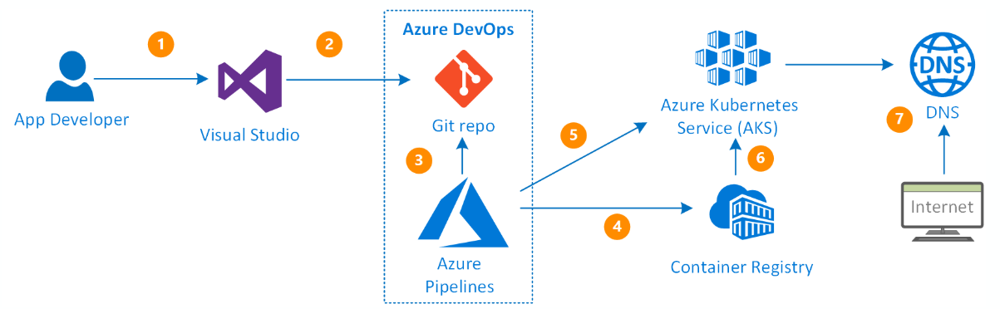

4.3. Automation¶
To perform the tasks of building and deploying microservices in different environments, we have created a list of Azure Pipelines that will allow us to automate these tasks and perform them in a more secure way.
Thus, these pipelines will be organised in this way for each environment:
- Development environment. Each project (microservice) will have its own pipeline that will: access the code repository, use the code from the develop branch, use the manifest files defined in this directory and perform the build and deploy tasks on the Container Registry and the AKS of the development environment.
- Test environment. It consists of a single pipeline located in the private repository Dx29.EnvTest. This will define all the stages to be performed on the microservices to be published in test: those of build and those of deploy. To do so, it will access the code of the repository containing the project associated with the microservice you want to work with, it will use the code available in its main branch, and then it will use the manifests files found in the Dx29.EnvTEST repository to perform the build and deploy tasks on the Container Registry and the test AKS.
- Production environment. This environment shares Container Registry with test, so that it will only access it to obtain the images already generated and compiled to be used in the production environment, that is to say, it will not perform build tasks, only deploy. It consists of only one pipeline located in the private repository Dx29.EnvPRO. This will define the deployment stages to be performed on the microservices to be published in production. To do this, it will access the Test Container Registry, take the corresponding image and deploy it to the production AKS.
4.3.1. Create new AKS pipeline.¶
For the deployment of the different components, we will use the Azure Devops Pipeline template to create a pipeline for an AKS.
So, once the project repository has been created and the functionality has been programmed or implemented, the steps to follow are as follows:
- Access Azure Devops Pipelines and create a “New pipeline”.

- Select Azure Repos Git as the input source.

- Select the code repository of the component.

- Among the available options, choose: “Deploy to Azure Kubernetes Service”.

- Configure the pipeline resources according to the Azure cluster to be used:
- a. Select Azure Subscription
- b. Select the cluster.
- c. Check namespace as “Existing” and select the one that you want to use for deployment. Normally this field is: “app-ingress”.
- d. Finally, enter the name of the image you want the pipeline to create for use in the cluster and check the port configuration. Normally this should be:
- The image should follow the pattern:
dx29-<image name>.- The port is 80 for microservices implemented in C# and 8080 for Nodejs ones.

After clicking on Validate and configure, the YAML with the content of our pipeline will be automatically generated. At this point we must make the necessary modifications to ensure that: The image name complies with the pattern dx29-<image name> and that the environment used corresponds to where we want to display the image (Dx29-DEV.app-ingress, Dx29-TEST.app-ingress or Dx29-PROD.app-ingress).
When we are sure of this we can save and finish. This will cause the following files to be added to the repository:
- The Manifests directory with two YAMLs: the deployment and the service.
- The Azure pipeline YAML file.
The following section explains the content of these files.
4.3.2. Pipeline YAMLs¶
For each pipeline you have:
- A Manifests folder with two YAML files: Deployment and Service, with the configuration for the deploy in Kubernetes.
- The YAML file of the Pipeline with the steps and tasks to be performed by it.
In this section the content of each of these files will be explained.
a. YAML FILE OF THE PIPELINE¶
| Section | Value | Description |
|---|---|---|
| trigger | - develop/main | For the automatic execution of the pipeline, you can set a trigger of one of the branches of the project, so that if any modification is made on it, the pipeline will be launched. |
| resources | - repo: self | The repository where the project code is located. Normally this value is "self" and refers to the repository on which the Pipeline was created, but it is possible to access any repository according to this link |
| variables | vmImageName: 'ubuntu-latest' | Definition of variables to be used in the different steps of the Pipeline. |
| stages | - stage: Build displayName: Build stage | Stages are the major divisions in a pipeline. They are logical boundaries in your pipeline where you can pause the pipeline and perform various checks. Every pipeline has at least one stage even if you do not explicitly define it. In our case the Deployment pipelines will be formed by two Stages: Build and Deploy. The corresponding jobs will be performed in each of them. |
| jobs | - job: Build | A stage contains one or more jobs. Each job runs on an agent. A job represents an execution boundary of a set of steps. All the steps run together on the same agent. In our case, for each stage, a Job will be created: Build or Deploy in each case. We configured the Deploy Job according to this link |
| steps | - task | Steps are implemented by tasks. This is where the sequence of tasks to be executed is defined. Steps are run sequentially, one after another. Before a step can start, all the previous steps must be finished (or skipped). In our case, for the Build job two tasks will be added: Build and push the docker image of the microservice to the container registry; and Upload the manifests of the pipeline (artifacts) that will be used later by the Deploy job. For the Deploy job two tasks will be added: Create a secret image to have permissions to access the container registry; and Use the deployment and service YAMLs that will be explained later in this document to deploy the artifacts from the previous job to the AKS. |
b. DEPLOYMENT YAML¶
apiVersion : apps/v1
kind: Deployment
metadata:
name: dx29-<microservice_name>-deployment
spec:
replicas: 1
selector:
matchLabels:
app: dx29-<microservice_name>-backend
template:
metadata:
labels:
app: dx29-<microservice_name>-backend
spec:
containers:
- name: dx29-<microservice_name>-backend
image: dx29devs.azurecr.io/dx29-<microservice_name>-
ports:
- containerPort: 8080
In this example:
- A Deployment named
dx29-<microservice_name>-deploymentis created, indicated by the .metadata.name field.- The Deployment creates ONLY ONE replicated Pod, indicated by the .spec.replicas field.
- The .spec.selector field defines how the Deployment finds which Pods to manage. In this case, you select a label that is defined in the Pod template (app:
dx29-<microservice_name>-backend). However, more sophisticated selection rules are possible, as long as the Pod template itself satisfies the rule. Note: The .spec.selector.matchLabels field is a map of {key,value} pairs. A single {key,value} in the matchLabels map is equivalent to an element of matchExpressions, whose key field is “key” the operator is “In”, and the values array contains only “value”. All of the requirements, from both matchLabels and matchExpressions, must be satisfied in order to match.- The template field contains the following sub-fields:
- The Pods are labeled app:
dx29-<microservice_name>-backendthe .metadata.labels field.- The Pod template’s specification, or .template.spec field, indicates that the Pods run one container,
dx29-<microservice_name>-backend, which runs thedx29-<microservice_name>-backendDocker Hub image.- Create one container and name it
dx29-<microservice_name>-backendusing the .spec.template.spec.containers[0].name field.
c. SERVICE YAML¶
apiVersion: v1
kind: Service
metadata:
name: dx29-<microservice_name>
namespace: app-ingress
spec:
type: ClusterIP
ports:
- port: 8080
selector:
app: dx29-<microservice_name>-backend
The key to sending requests from a frontend to a backend is the backend Service. A Service creates a persistent IP address and DNS name entry so that the backend microservice can always be reached. A Service uses selectors to find the Pods that it routes traffic to.
In this example you can see that the Service, named dx29-<microservice_name> routes traffic to Pods that have the label app dx29-<microservice_name>-backend.
Different types of services can be configured, in the dx29 v2 application the ones we will find are:
- LoadBalancer only for the services that are exposed outwards: dx29-web and dx29-api-gateway.
- ClusterIP for the rest of the microservices.
4.3.3. Important notes¶
- If we are in the repository that contains the manifest files but we need to access another repository to obtain the project code:
We must configure the repository as a resource of the pipeline, before any stage has been declared:
resources:
repositories:
- repository: <repository_name>
name: <repository_name>
type: git
ref: <branch>
Add- checkout: <repository_name>before execute the task (steps).
- If we want to deploy several microservices (as in the case of test and prod) we can organise the stages in different files or templates accessed by the main pipeline:
Configure the pipelines stages as:
stages:
- template: <template_path_and_name>.yml
parameters:
<input_parameters_template> (i.e. vmImageName: $(vmImageName))
In template.yaml only configure the stages:
stages:
- stage: Build
[...]
And use the inout parameters as:${{parameters.vmImageName}}
- If we want to work with the input parameters in a pipeline execution, we have to add: We can use the runtime parameters as the guide describe:
parameters:
- name: tag
displayName: Tag
type: string
default: 'v0.00.00'
- If we want to work with pipeline variables that will share several templates, i.e. organise the variables in a single file:
As with the pipeline stage definition templates, variables can also be configured within another file. This file will be in the format:
variables:
# Container registry service connection established during pipeline creation
dockerRegistryServiceConnection: <secret>
containerRegistry: <acr_server>
dockerfilePath: <path_Dockerfile>
imagePullSecret: <image_pull_secret_AKS>
# Agent VM image name
vmImageName: 'ubuntu-latest'
environment: <environment_name.namespace>
# Images
imageRepositoryX: <imageX_name>
And it will be imported into the main pipeline as:
variables:
- template: <path_and_varsFileName>.yaml
4.3.4. Check status of deployment¶
To check if the deploy of a component has been carried out correctly:
- Check that the Pipeline has been executed correctly.
- Check in the corresponding Container Registry that the image has been created.
- Check in the corresponding AKS that:
- a. The Deployment (Azure AKS - workloads) is “Ready” .
- b. The service status is OK, it is of the correct type and has an associated IP.
4.3.5. Dx29 pipelines by environment¶
4.3.5.1. Development Dx29 pipelines¶
To deploy the development environment there will be a Pipeline for each component (web and microservices) that will be executed automatically when changes are made to the develop branch of each project. In this way, the dev environment is formed/updated on the fly with new implementations. It does not have version control.
4.3.5.2. Test Dx29 pipelines¶
In this case, a repository has been created in Azure Repos: Dx29.Test (and an open source version has been uploaded as an example to github: Dx29.Pipelines_all) where the YAML of the test pipeline and the manifest files needed to deploy the environment will be located.
There will be a single YAML that has access to the different repositories of the Dx29 component projects (web and microservices) and uses templates to build the images of each of them and deploy them in the test environment. In this way, there will be a main pipeline that will use as templates those of the different components of the application according to this.

- Azure-pipelines.yaml is the main file.
- Folder templates contains the YAML files for each component.

- Folder manifests contains the manifests for each component (deployment and service).

For each component, the repository where the source code is located will be accessed. Each of the files that appear in Templates and manifest are copies of the development environment files for each component, although the content will be slightly modified for the test environment. With all this:
- The structure of the pipelines for each template will be as indicated in this document (in the previous sections) having only the Build and Deploy stages for each component. That is to say: trigger, repositories and variables are eliminated.
- The names of the stages of each component must be modified (they cannot all be called the same) and indicate for which component this stage is being carried out and if it is related to any of them.
- The environment on which the deployment is performed is modified:
<name_environment_test>.<aks_namespace>.- All the variables become parameters, so that when you want to use the template, from the main pipeline you must indicate with which values you want to perform the operations. The access will now be done as a parameter, not as a variable.
- These pipelines will use the manifest corresponding to each component so that, inside the manifest folder, the deployment and service files are renamed indicating the component to which they belong and updated in the corresponding template pipeline.
- A checkout step is added. This task will oversee choosing the repository on which the operations will be carried out, thus: the build tasks will be executed using the component repository while the build tasks will be executed from the Test repository.
- Within each deployment file, the image container must be modified so that the test container is used:
<acr_test_server>/<image_name>.
The main pipeline:
- It will configure the access to the different code repositories.
- It will define the variables to work with.
- And it will include as a stage each of the templates implemented for each component of the application, passing the values of the previous variables as parameters.
Finally, this pipeline will also have an input parameter that can be used for version control. This is explained in the next section of this document. When this pipeline is launched, a Tag or version will be indicated so that:
- All images of the application components with that tag will be compiled and uploaded to the container registry.
- Deploy the images with the tag indicated in the cluster (AKS).
Therefore, the execution of this pipeline is manual.
For version control an input parameter to the pipeline will be used: Tag. When running the test pipeline, you must specify which version you want to deploy, so that all images with that version will be generated and uploaded.
parameters:
- name: tag
displayName: Tag
type: string
default: 'v0.0.1'
When launching the pipeline, you can choose which losstages you want to run. Be careful with this option because when uploading to production you have to choose the version you want to upload, and therefore the images must exist.
4.3.5.3. Production Dx29 pipelines¶
It will be the same as the test pipeline but only with the deploy stages. In this case only the selected images will be accessed with the input parameter tag/version and deployed to the production cluster. The pipelines can be found in the repository Dx29.Prod, and an open source version has been uploaded as an example to github: Dx29.Pipelines_only_deploy
This pipeline will also not be executed automatically but must be launched manually.
For version control there is a variables yaml file with the tags of all images that the pipeline deploy on Dx29 production environment.